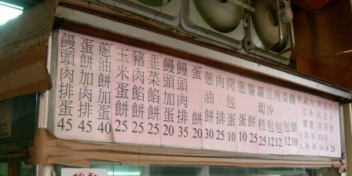
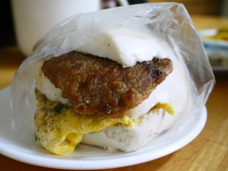

我沒想到要吃一家親包子店的包子有這麼難啊 暨前一天到了太晚 一家親已經生意太好賣完關門了 第二天早上 我起的更早了 不過開到了水田街 看到了一家親包子店的鐵門已經拉下了 但是這一次有進步 起碼還留了一個小洞 看到裡面還有燈光亮著 就這樣決定來學府路那個很受歡迎的饅頭肉排店
一大早天氣不好 果真生意超夯的饅頭肉排蛋人氣少了點
底下就是上次來的時候 看到這裡人龍挺長的 在無名饅頭肉排店還沒有搬來這個位置的時候生意就很好 常常需要排隊 過了這麼久還是一樣這麼受歡迎
這店面真的很小阿 為了煎受歡迎的肉排 看看那抽風機有五台
門口的這個看起來有點歷史的菜單就貼在門口 這個我有印象 應該是從老店那裏搬過來貼的阿 不過畢竟是新店阿 在店裡面也用印刷的印了新的菜單
雖然說搬家了 不過新的店面也沒有比較大啊 甚至感覺更小了 不過不管怎麼樣搬家了就是 所以牆上有立委送的匾額 高朋滿座 這真的不用說阿 這無名可是新竹的名店呢
在門口的爐子上 豆漿正在煮著
真的是現煮的阿 因為我不喝沖泡的豆漿 看到了在現煮的豆漿 我也點了一杯
豆漿味道還ok 但是並沒有讓我驚豔 不過本來這一家早餐店重點就不在飲料阿
這辣椒醬…好香阿
首先來的是蘿蔔糕 很普通 如果沒有辣椒醬 這蘿蔔糕一點都不值得點
這個蛋餅非常好吃 拍照的時候沒有什麼感覺 在吃了之後 哇這蛋餅皮很薄煎的酥酥的
在店門口的櫥子裡面放了滿滿的饅頭 白饅頭跟芋頭饅頭兩種 在選擇肉排蛋的時候可以有兩種組合
招牌肉排蛋來了阿 饅頭好大一個阿 裡面夾了蔥蛋跟肉排 就是這一味 讓大家甘心情願來這裡大排長龍的等待
這個肉排都是現煎的 整個肉排雖然薄薄的 不過現煎的挺嫩的 蔥蛋則是煎得很香 這些東西搭起來意外的挺搭阿 本來這種饅頭 是機器做的吃起來沒有口感 不過在這個饅頭肉排蛋裡面 用最簡單的饅頭不用在乎饅頭的口感 但是肉排跟蔥蛋的的組合 讓最簡單不突出的饅頭成了最好的配角 只能說 這店家有名是有原因的啦
一個饅頭肉排蛋45元 說貴不貴說便宜也不便宜 不過這分量真的十足 我想大部分的人吃完之後都會很飽的
引自:http://teavanilla.com/2963.html